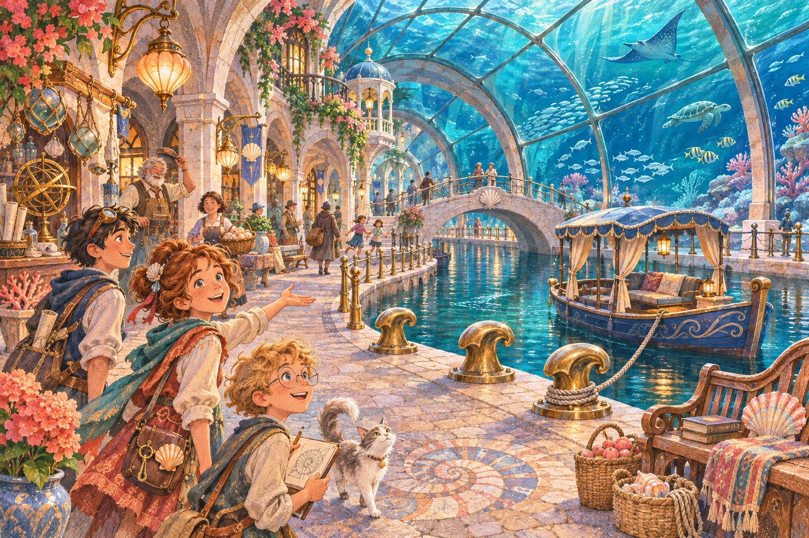

Погоня: три пути с рынка к причалу
Курьер с коробкой в синей шнуровке ушёл с рынка к Причалу Трёх Приливов. Сейчас 11:05.

Набережная
15 минут бегом. В 11:20 её закроют щиты большой воды.

Мостки над рыбным рядом
25 минут. Открыты всегда, но тесно: тележки, корзины, покупатели.

Лодочный канал
15 минут на лодке Норы от рыбного пирса, против утреннего течения.
Выберите путь. После каждого действия ведущий называет время. Можно разделиться.